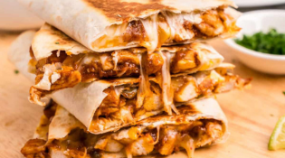
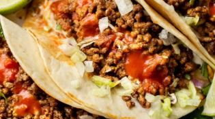
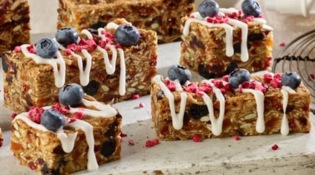
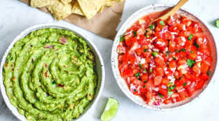
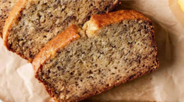
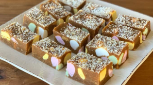

A Collection of Favourites
All Recipes
Explore easy meals, delicious snacks, and sweet treats, all in one place.
Main Meals
.png)
Smash Burgers
Juicy double-patty smash burgers with a spicy pickle and mayo flavour.
View Recipe →.png)
Nachos
A loaded nacho dish with seasoned mince, melted cheese, and crunchy chips.
View Recipe →.png)
Pasta
A creamy mushroom pasta with golden buttery mushrooms, garlic, parmesan, and a rich creamy sauce tossed with pasta.
View Recipe →
Quesadillas
Crispy golden tortillas filled with melted cheese, seasoned beef, chicken or vegetables and fresh Mexican flavours.
View Recipe →
Tacos
Juicy seasoned beef mince in crispy taco shells, stopped with melted cheese, fresh lettuce, tomato, onion and sour cream.
View Recipe →Snacks
.png)
Cheese Rolls
A classic snack from New Zealand with a warm, cheesy filling wrapped in crispy bread.
View Recipe →.png)
Garlic Bread
Baked bread topped with garlic, butter and parsley.
View Recipe →.png)
Sausage Rolls
Golden puff pastry filled with a tasty mixture of beef mince, sausage meat, tomato sauce, BBQ sauce, and herbs.
View Recipe →
Muesli Bars
A snack made with oats, nuts, seeds, and dried fruits, tied together with golden syrup and baked into a delicious slice.
View Recipe →
Salsa & Guacamole
A fresh and flavourful homemade salsa and guacamole combination that's perfect for sharing with tortilla chips.
View Recipe →Sweet Treats
.png)
M&M Cookies
Soft cookies filled with M&M's and chocolate chips, inspired by the original cookies from Subway.
View Recipe →.png)
Tiramisu
Coffee-soaked ladyfingers layered with creamy mascarpone, dusted with cocoa powder.
View Recipe →.png)
Cookie Dough
Easy and delicious edible cookie made with no raw eggs, making it safe to enjoy straight from the bowl.
View Recipe →
Banana Bread
A classic banana bread recipe made with bananas, cinnamon and walnuts.
View Recipe →
Lolly Cake
A simple no-bake New Zealand favourite made with crushed biscuits, condensed milk, butter, explorers and coconut.
View Recipe →